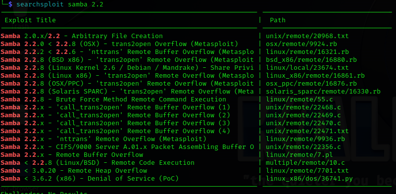

https://github.com/heltonWernik/OpenLuck:exploit for mod ssl
Apache httpd 1.3.20
139:Samba 2.2.1a:
https://www.rapid7.com/db/modules/exploit/linux/samba/trans2open/
https://www.exploit-db.com/exploits/10
https://www.exploit-db.com/exploits/7
#searchsploit Samba 2.2.1a
searchsploit helps to find vulnerability(can be used while offline)
if dont get response, be less specific like
#searchsploit samba 2.2

#searchsploit mod ssl2